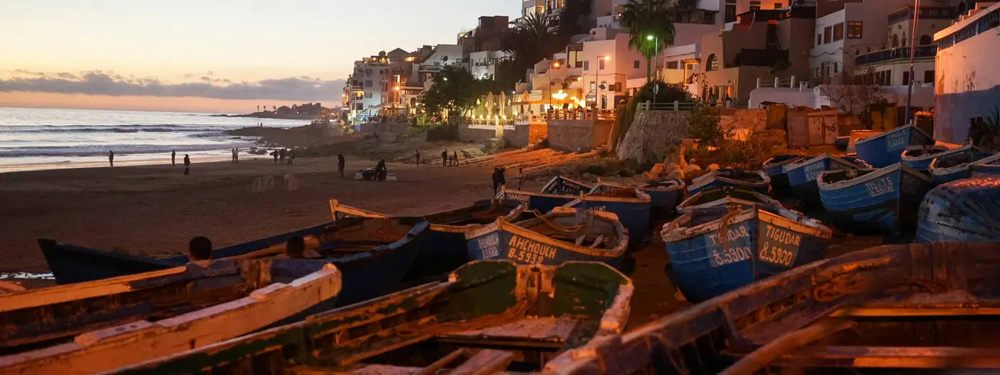

Morocco Grand Tour - 25 Days / 24 Magical Nights in Morocco
Escorted tour24 nights

Where you stay
- Kenzi Solazur HotelTangier · 3 nights · breakfast included
- Royal Mirage HotelFez · 2 nights · breakfast included
- Aday HotelCasablanca · 5 nights · breakfast included
- Atlas Essaouira HotelEssaouira · 2 nights · breakfast included
- Dominium HotelAgadir · 6 nights · breakfast included
- Grand Plaza HotelMarrakech · 6 nights · breakfast included
Included
- Accommodation for 24 nights in selected 4-star hotels or similar, on bed and breakfast, according to the programme.
- Transportation by air-conditioned private deluxe van during the tour.
- Assistance of English-speaking local guides during the main city tours.
- Visits and monument entrance fees during the visits mentioned in the programme.
- Taxes and services at the hotels.
- Porterage of luggage in and out at the hotels.
- Permanent assistance of the operator's staff during the client's stay in Morocco.
Not included
- Any other meal, service or extra not mentioned in the programme.
- Tips for the tour guide and driver.
- Domestic flight tickets.
- E-visa fee.
Day by day
- 1Arrival in Tangier — Tangier
- Arrival at Tangier airport, welcomed by your driver.
- Transfer to your hotel.
- Check in and overnight.
- 2Tangier — Tangier
- Breakfast at the hotel and a full day visiting this cosmopolitan city, the gateway to Africa.
- See the medieval Medina, the vast and vibrant souq known as the Grand Socco, tea houses, the Kasbah and the Kasbah Square, Cap Spartel and the Caves of Hercules.
- Overnight at your hotel.
- 3Tangier - Tetouan - Chefchaouen - Tangier — Tangier
- After breakfast, departure to Chefchaouen via Tetouan, 'The White Dove'.
- Orientation tour of Tetouan: Hassan II Square, where the old and modern parts of the town converge; Bab el Oukla; the Medina; and the Mellah (Jewish quarter).
- Continuation to Chefchaouen, the 'Blue City', set at 600 m in the Rif Mountains and characterised by houses decorated with bright white, turquoise and powder-blue walls.
- Walking tour taking in the Palace El Makhzen, the famous 3,000 m2 square of Ouatta el Hammam, the maze of alleyways and fine doorways of the Medina, the crumbling ochre kasbah and the exterior of El Masjid El Andalous with its octagonal mosque, characteristic of northern Morocco.
- Return to Tangier and overnight.
- 4Chefchaouen - Meknes - Fez — Fez
- Breakfast at your hotel and departure to Fez by highway, passing via Meknes.
- Visit the Imperial City of Meknes, a UNESCO World Heritage Site, including the Bab Mansour gateway, the ramparts, the Medina and the Place El-Hedim.
- Continuation to Fez. Overnight at your hotel.
- 5Fez — Fez
- Full day sightseeing tour of Fez, the oldest of the four Imperial Cities, founded around 809 A.D., the spiritual and intellectual capital of Islam in the west.
- Visit the 15th-century Borj Nord arms museum, the great gateway of the Royal Palace, and the Mellah (Jewish quarter) with its fine examples of Mauro-Hispanic architecture.
- Visit the 9th-century Karaouiyine Mosque and University with its medersas (colleges) Bou Inania and Attarine dating from the 14th century, the shrine of Moulay Idriss II, founder of Fez, and the Nejjarine fountain.
- Afternoon continuation of the visit: the spice market, the souks, the Medina and the tanneries.
- Overnight at the hotel.
- 6Fez - Rabat - Casablanca — Casablanca
- Breakfast at the hotel, then departure to Casablanca, passing by Rabat.
- Visit Rabat, the political and administrative capital of Morocco and the fourth of the Imperial Cities, including the King's Palace enclosure, the Mohamed V Mausoleum, the unfinished Hassan Tower and Mosque, and the Oudayas.
- Continuation to Casablanca. Overnight at your hotel.
- 7Casablanca — Casablanca
- Guided sightseeing tour of Casablanca, the economic capital of Morocco.
- See Mohamed V Place, the United Nations Square, the new medina and the Mahkama (Moroccan law courts) in Hispano-Mauresque architecture.
- Visit Notre Dame de Lourdes church with its stained glass, the Anfa residential suburb, site of the wartime conference between Roosevelt, Churchill and Mohamed V, and Ain Diab, Casablanca's playground with its cafes, restaurants and pools.
- Visit the Hassan II Mosque, the second largest mosque in the world.
- Overnight at your hotel.
- 8Casablanca - At leisure — Casablanca
- Breakfast at the hotel and day at leisure to explore Casablanca.
- Overnight at the hotel.
- 9Casablanca - At leisure — Casablanca
- Breakfast at the hotel and day at leisure to explore Casablanca.
- Overnight at the hotel.
- 10Casablanca - At leisure — Casablanca
- Breakfast at the hotel and day at leisure to explore Casablanca.
- Overnight at the hotel.
- 11Casablanca - Essaouira — Essaouira
- Breakfast at the hotel and departure to Essaouira, on the Atlantic coast.
- Fortified by the Portuguese, who called it Mogador, Essaouira's prosperous era began in the 18th century; the town is renowned for its woodwork handicrafts.
- Visit the Scalla, the Kasbah and the Medina, the Moulay Hassan Square and the port.
- Check in and overnight at your hotel.
- Activities such as kitesurfing, surfing, windsurfing, stand-up paddle and biking can be arranged locally.
- 12Essaouira — Essaouira
- Breakfast at the hotel and day at leisure in Essaouira.
- Overnight at your hotel.
- 13Essaouira - Agadir — Agadir
- Breakfast at the hotel and departure to Agadir.
- Comfortable stops en route.
- Check in and overnight at your hotel.
- 14Agadir — Agadir
- After breakfast, drive up 216 m to the pise (rammed earth) walls of the largely ruined Kasbah on the hill, for a panoramic view of the commercial port, the 9 km sandy bay and the white city with its main avenues and popular Corniche.
- Visit the Medina and the souk of the bustling Bab El Had (closed only on Mondays), sheltered by wattle screens, where you can buy spices, leather slippers (babouches), a kaftan or a burnous.
- Optional detour to Crocoparc, a farm in the Atlantic area home to more than 300 Nile crocodiles.
- Continue to the beach area and Agadir's new marina for a short relaxing stop and refreshment (at extra cost) before returning to your hotel.
- Afternoon at leisure to relax at the hotel swimming pool or on the beach.
- Activities such as kitesurfing, surfing, windsurfing, stand-up paddle and biking can be arranged locally.
- 15Agadir - At leisure — Agadir
- Breakfast at the hotel and day at leisure to relax on the beach of Agadir.
- Overnight at your hotel.
- 16Agadir - At leisure — Agadir
- Breakfast at the hotel and day at leisure to relax on the beach of Agadir.
- Overnight at your hotel.
- 17Agadir - At leisure — Agadir
- Breakfast at the hotel and day at leisure to relax on the beach of Agadir.
- Overnight at your hotel.
- 18Agadir - At leisure — Agadir
- Breakfast at the hotel and day at leisure to relax on the beach of Agadir.
- Overnight at your hotel.
- 19Agadir - Marrakech — Marrakech
- Breakfast at the hotel and departure to Marrakech by highway.
- Comfortable stops en route.
- Check in and overnight at your hotel.
- 20Marrakech - Historical sightseeing — Marrakech
- Breakfast at the hotel and full day devoted to visiting Marrakech, 'the pearl of the south', second of the four Imperial Cities.
- Visit the Menara gardens, a magnificent pool surrounded by flowers reflecting a Moorish pavilion built in 1866 for the dignitaries.
- See the Koutoubia Minaret, twin tower of la Giralda in Seville, and the Bahia Palace in the heart of the Mellah (Jewish quarter).
- Afternoon walk through the colourful and aromatic souks of Marrakech and the labyrinth of narrow alleyways of the Medina, on to the famous Djemaa El Fna Square, the ancient meeting point of tradesmen in northwest Africa, with its entertainers, singers, dancers, acrobats, jugglers, story-tellers, public scribes, soothsayers, medicine men, dentists and snake charmers.
- Overnight at your hotel.
- 21Marrakech - Atlas Mountains - Marrakech — Marrakech
- After breakfast, a 90-minute excursion south to the High Atlas Mountains, one of the most fascinating mountain systems on the African continent, through a succession of oases and mountain roads dotted with small villages and red clay buildings.
- Road trip along the Berber villages, through countryside of pure air and rustic traditions; Asni Mountain is an ideal escape for nature lovers.
- Return to Marrakech. Time at leisure for relaxation at your hotel.
- 22Marrakech - Excursion to the Agafay Desert — Marrakech
- Breakfast and morning to relax at the hotel swimming pool.
- Afternoon excursion to the Agafay Desert, a rocky desert of several hundred hectares located about thirty kilometres from Marrakech on the foothills of the High Atlas, with hilly terrain and dunes in white and ochre tones.
- On arriving at the desert camp and freshening up, choose between activities such as a camel ride through the desert landscape, quad biking or a VTT tour, and watch the sunset over the desert.
- Return to Marrakech for overnight.
- 23Marrakech - At leisure — Marrakech
- Breakfast and day at leisure to relax and stroll within the medina of Marrakech.
- Overnight at your hotel.
- 24Marrakech - At leisure — Marrakech
- Breakfast and day at leisure to relax and stroll within the medina of Marrakech.
- Overnight at your hotel.
- 25Marrakech - Departure — Marrakech
- After breakfast, transfer to Marrakech airport in time for your flight home.
- End of services.
Good to know
- Arrival is into Tangier airport and departure is from Marrakech airport.
- Hotels quoted are subject to availability at the moment of the client's confirmation; the properties listed are 'or similar'.
- No booking is made before receiving confirmation.
- Itinerary and programme of visits are as per the programme above.
- Document inconsistency: the day 4 heading reads 'Chefchaouen - Meknes - Fez' although day 3 returns to Tangier for the overnight, so day 4 in fact departs from Tangier.
- Document inconsistency: the inclusions list states transportation from and to Casablanca airport, while the programme arrives at Tangier and departs from Marrakech.